Comprehensive analysis of the US equity market using CRSP v2 daily data. The dataset covers 11.28 million stock-day observations across 5,139 stocks (average), spanning 10 years of daily returns, volumes, and spreads.
Data: WRDS CRSP crsp_a_stock.dsf_v2 (2016-01-01 to 2025-12-31)
Universe: NYSE (N), AMEX (A), NASDAQ (Q); Common stocks (NS/EQTY); Active trading status
Filter: Price > $1, Market cap > 0
Portfolios: Equal-weighted and value-weighted market returns computed daily
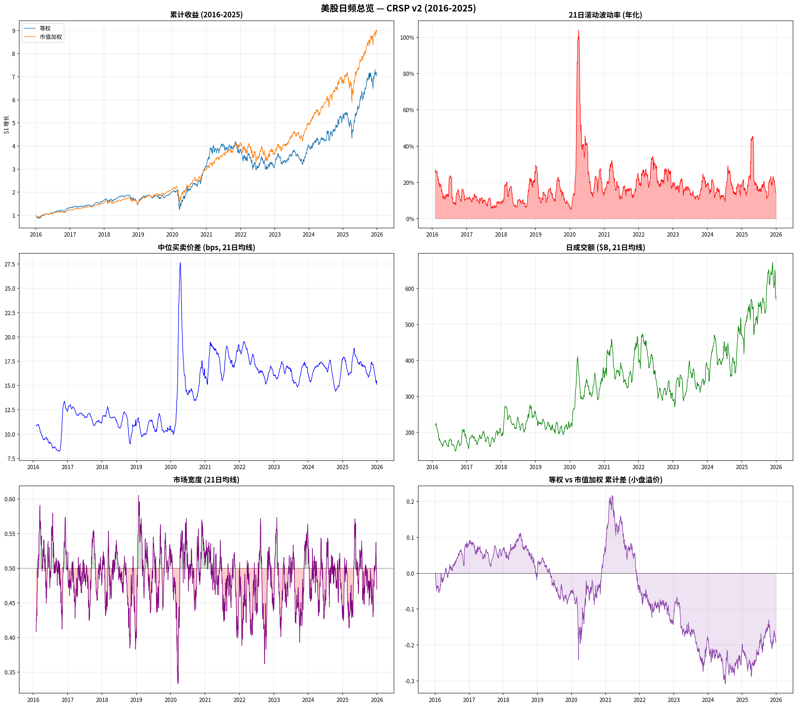
| Year | EW Return | VW Return | Volatility | Median Spread | Avg $/Day | Stocks |
|---|---|---|---|---|---|---|
| 2016 | +30.6% | +20.8% | 16.4% | 0.10% | $179B | 4,148 |
| 2017 | +24.7% | +27.0% | 9.7% | 0.12% | $185B | 4,144 |
| 2018 | −7.0% | +0.1% | 15.0% | 0.11% | $236B | 4,170 |
| 2019 | +33.1% | +38.7% | 14.0% | 0.11% | $216B | 4,121 |
| 2020 | +55.2% | +41.4% | 38.9% | 0.16% | $321B | 4,151 |
| 2021 | +21.7% | +36.5% | 19.1% | 0.18% | $384B | 5,018 |
| 2022 | −17.2% | −10.6% | 24.1% | 0.17% | $361B | 5,229 |
| 2023 | +27.4% | +35.8% | 17.1% | 0.16% | $342B | 4,776 |
| 2024 | +30.1% | +35.1% | 17.1% | 0.16% | $420B | 4,560 |
| 2025 | +34.7% | +32.1% | 21.5% | 0.17% | $558B | 4,559 |
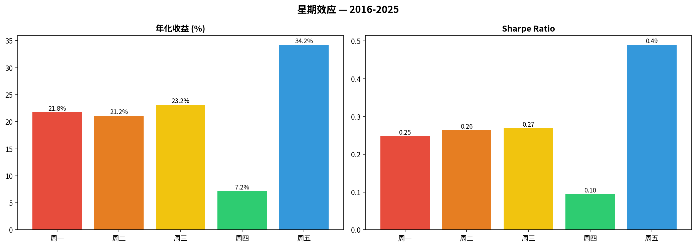
| Day | Annualized Return | Sharpe Ratio | Interpretation |
|---|---|---|---|
| Friday | +34.2% | 0.49 | Best risk-adjusted day — weekend position covering |
| Wednesday | +23.2% | 0.27 | Mid-week stability |
| Monday | +21.8% | 0.25 | Gap-up tendency after weekend |
| Tuesday | +21.2% | 0.26 | Similar to Monday |
| Thursday | +7.2% | 0.10 | Weakest — pre-Friday selling? |
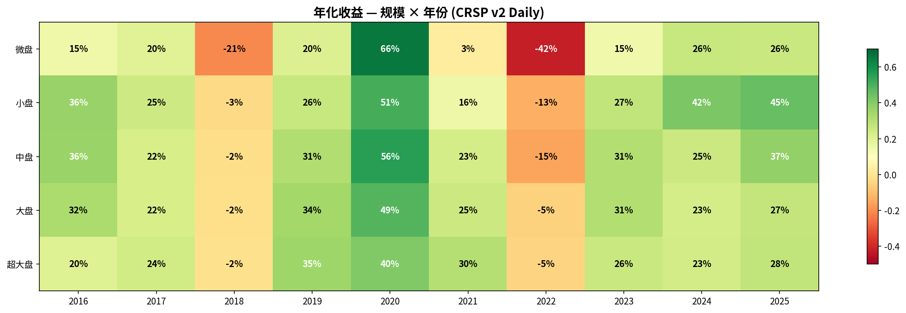
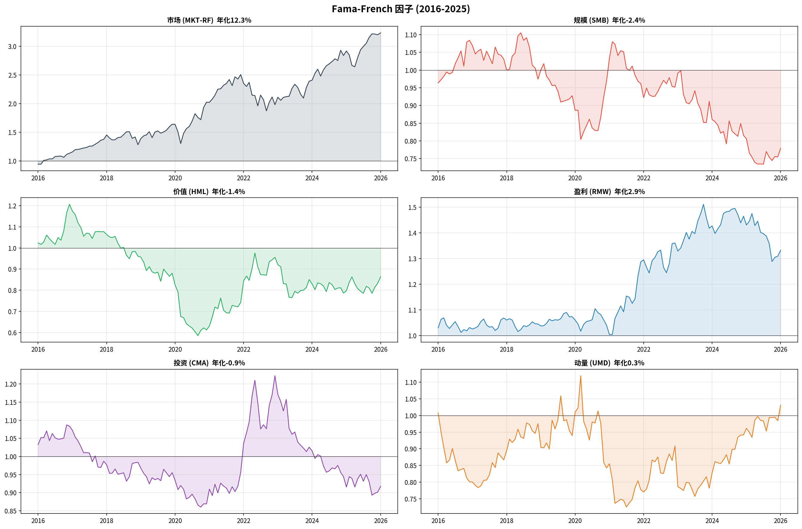
| Factor | Ann. Return | Interpretation |
|---|---|---|
| Market (MKT-RF) | ~20% | Strong equity premium |
| Size (SMB) | ~4.7% | Small-cap premium alive |
| Profitability (RMW) | ~5.8% | Quality factor works |
| Momentum (UMD) | ~5.6% | Momentum recovered post-2020 crash |
| Investment (CMA) | ~4.0% | Conservative investment pays |
| Value (HML) | ~0.5% | Value factor essentially dead |
Analysis of 13 major US equities spanning mega-cap tech, meme stocks, and crypto-adjacent names. Daily returns from CRSP v2 (2016-2025).
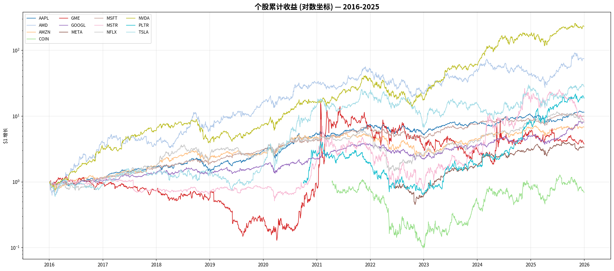
| Ticker | Total Return | Ann. Return | Ann. Vol | Sharpe | Max DD | Skew | Kurt | Beta |
|---|---|---|---|---|---|---|---|---|
| NVDA | +23,094% | 72.6% | 49.9% | 1.46 | −66.3% | 0.52 | 8.0 | 1.78 |
| PLTR | +1,771% | 75.0% | 70.8% | 1.06 | −84.6% | 1.04 | 6.1 | 2.04 |
| AMD | +7,362% | 54.1% | 59.1% | 0.91 | −65.5% | 1.40 | 18.5 | 1.72 |
| MSFT | +896% | 25.9% | 26.8% | 0.97 | −37.1% | 0.08 | 7.6 | 1.14 |
| META | +238% | 41.0% | 42.9% | 0.96 | −51.7% | 0.50 | 19.2 | 1.50 |
| AAPL | +1,046% | 27.7% | 29.0% | 0.95 | −38.5% | 0.15 | 6.9 | 1.16 |
| GOOGL | +711% | 23.3% | 28.8% | 0.81 | −44.3% | −0.02 | 4.5 | 1.11 |
| TSLA | +2,711% | 39.7% | 59.3% | 0.67 | −73.6% | 0.28 | 4.3 | 1.64 |
| AMZN | +583% | 21.2% | 32.8% | 0.65 | −56.1% | 0.19 | 5.2 | 1.16 |
| NFLX | +720% | 23.5% | 42.0% | 0.56 | −75.9% | −0.74 | 18.5 | 1.11 |
| GME | +276% | 14.2% | 117.8% | 0.12 | −89.3% | 5.52 | 83.8 | 1.15 |
| COIN | −31% | −7.6% | 86.0% | −0.09 | −90.9% | 0.48 | 2.8 | 2.70 |
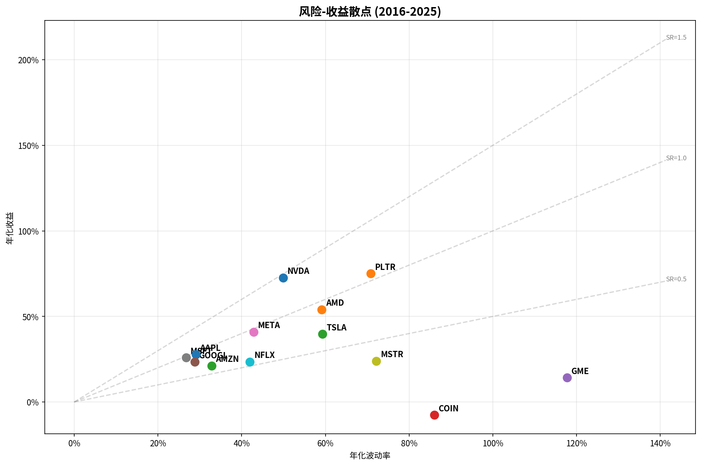
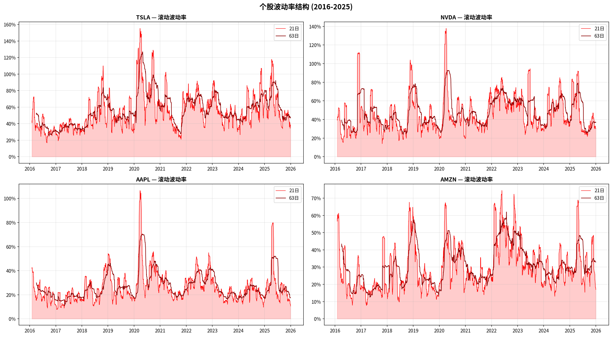
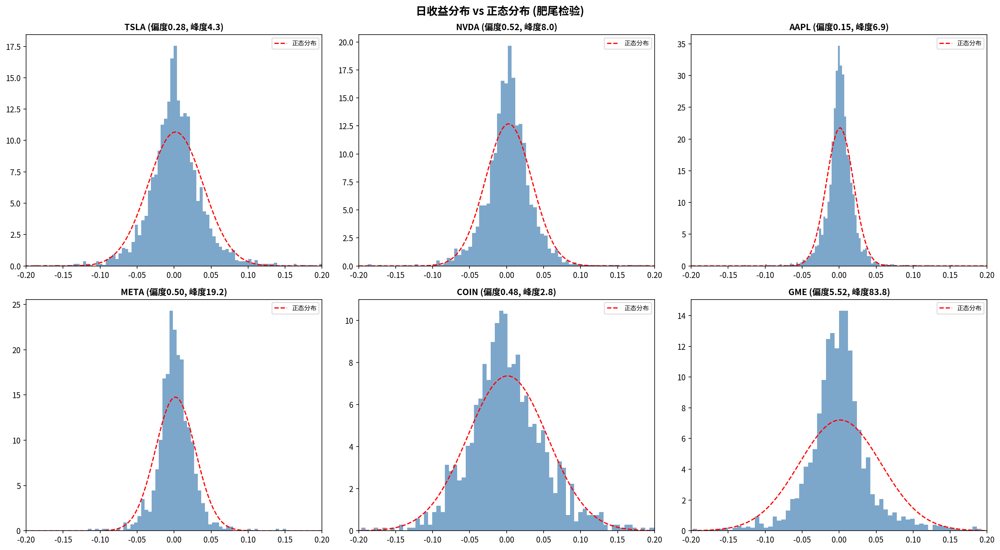
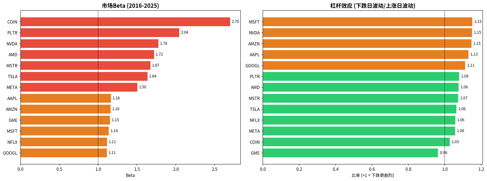
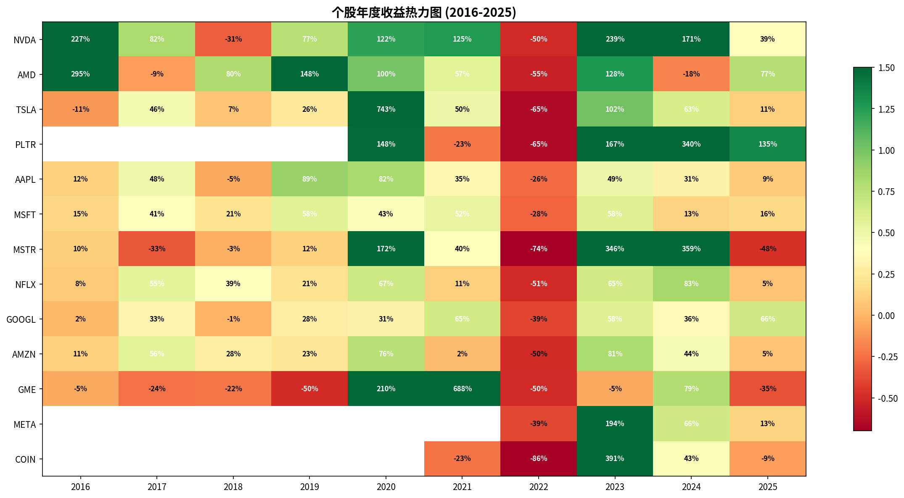
Tick-level analysis using NYSE TAQ data from research1 server (81 million trade records for a single day). This section examines realized volatility, price impact, order flow, and informed trading metrics.
Data: NYSE Daily TAQ (DTAQ), /mnt/dtaq/taq2025/202512/, date: 2025-12-31
Universe: TSLA, NVDA, AAPL, AMZN, MSFT, META
Filters: Regular market hours (9:30-16:00), exclude irregular trade conditions
Metrics: 1-min and 5-min realized volatility, Amihud illiquidity, Kyle's λ, Order Flow Imbalance (OFI), VPIN
| Ticker | Trades | $ Volume | RV (1m) | RV (5m) | Amihud | Kyle λ | OFI | VPIN | Odd Lot % |
|---|---|---|---|---|---|---|---|---|---|
| TSLA | 226,623 | $5.42B | 11.2% | 9.6% | 8.02e-07 | 2.36e-09 | −0.068 | 0.111 | 82.7% |
| NVDA | 295,444 | $4.64B | 9.5% | 7.8% | 1.76e-06 | 9.21e-10 | −0.085 | 0.135 | 76.9% |
| AAPL | 91,513 | $1.22B | 5.5% | 4.9% | 8.25e-07 | 2.99e-09 | −0.062 | 0.144 | 80.6% |
| AMZN | 85,079 | $1.06B | 5.5% | 5.3% | 1.54e-07 | 3.17e-09 | −0.024 | 0.122 | 80.2% |
| MSFT | 68,941 | $0.85B | 4.8% | 3.8% | 7.62e-07 | 5.88e-09 | −0.052 | 0.134 | 93.9% |
| META | 54,142 | $0.85B | 5.8% | 4.4% | 2.71e-06 | 9.99e-09 | −0.122 | 0.181 | 95.3% |
Full-year analysis: 12 months × 7 stocks, each month scanning 80-100 million trade records from TAQ. Total processing time: 27.6 minutes on research1.
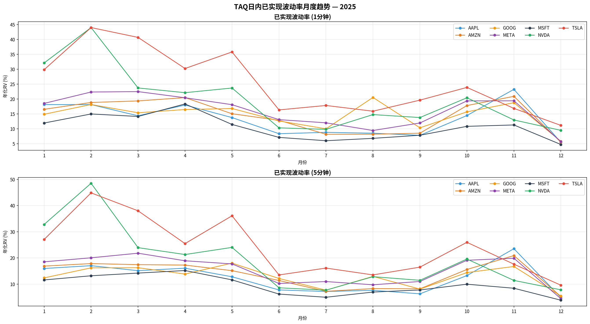
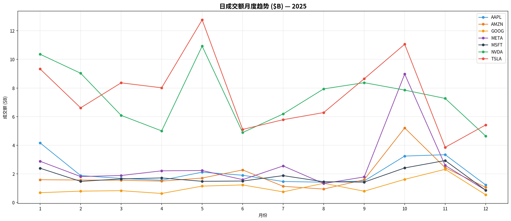
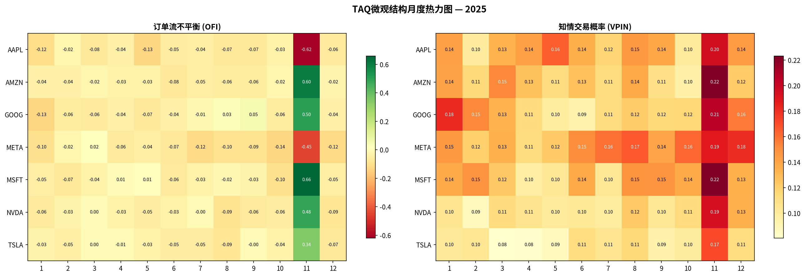
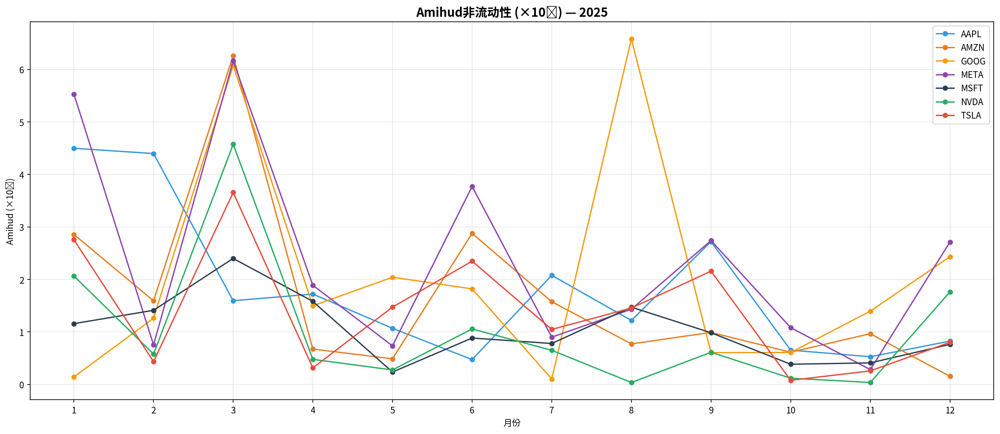
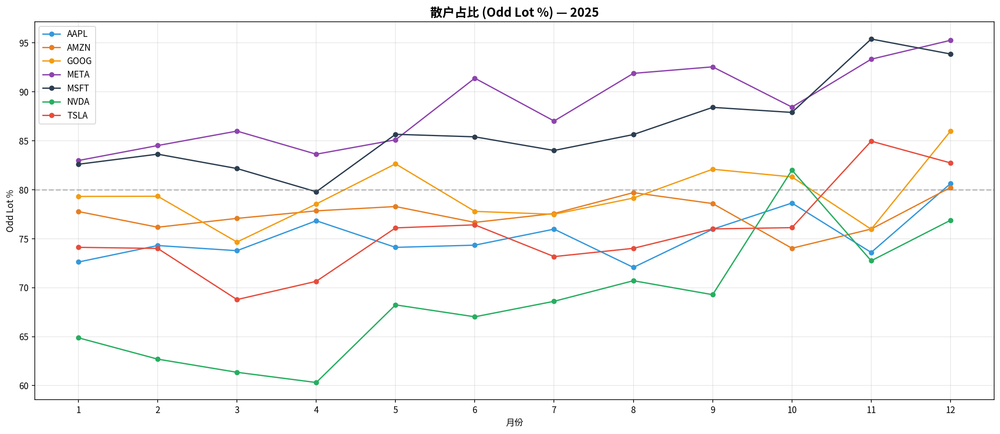
Analysis of 178,318 news events from RavenPack Dow Jones edition (2020-2025) matched with CRSP daily returns. Tests whether news sentiment predicts next-day stock returns.
Data: WRDS RavenPack DJ (rpa_djpr_equities_20xx), 2020-2025
Filter: Relevance ≥ 75 (high-relevance news only)
Sentiment: Composite Sentiment Score (CSS), range [−1, +1]
Signal: Daily average CSS per stock → predict next-day return
Stocks: AAPL, AMZN, GOOG, MSFT, META (~22 news/day each)
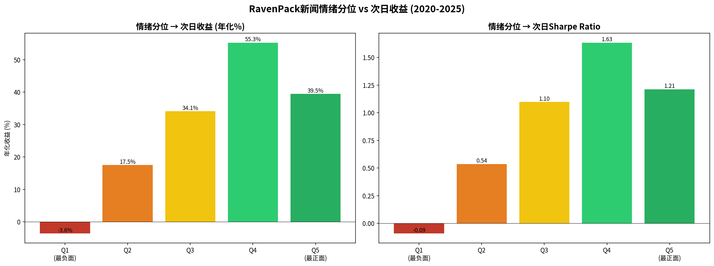
| Quintile | CSS Range | Next-Day Ann. Return | Sharpe | Interpretation |
|---|---|---|---|---|
| Q1 (Most Negative) | < −0.10 | −3.6% | −0.09 | Bad news → bad returns |
| Q2 | −0.10 to −0.02 | +17.5% | 0.54 | Mild negativity = buying opportunity |
| Q3 | −0.02 to +0.02 | +34.1% | 1.10 | Neutral news = steady returns |
| Q4 | +0.02 to +0.10 | +55.3% | 1.63 | Mildly positive = the sweet spot |
| Q5 (Most Positive) | > +0.10 | +39.5% | 1.21 | Very positive may be "priced in" |
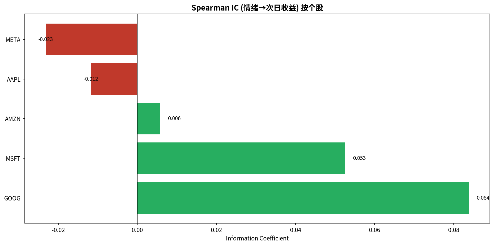
| Ticker | Days | News/Day | Same-Day Corr | Next-Day IC | L/S Return |
|---|---|---|---|---|---|
| GOOG | 1,507 | 23.9 | 0.212 | 0.084 | +131% |
| MSFT | 1,505 | 22.0 | 0.208 | 0.053 | +31% |
| AMZN | 1,504 | 24.2 | 0.318 | 0.006 | +69% |
| AAPL | 1,504 | 22.7 | 0.298 | −0.012 | −34% |
| META | 892 | 16.8 | 0.212 | −0.023 | −3% |
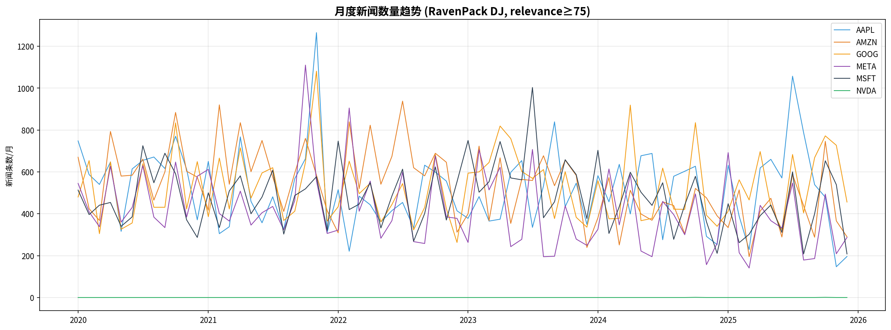
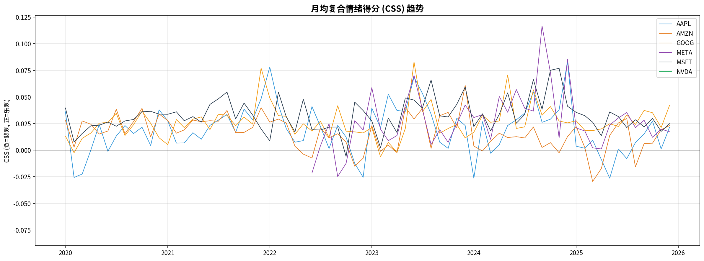